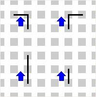
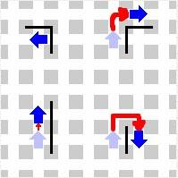

En otras palabras, diciendo "turnright(); " Karel giraría tres veces hacia la izquierda para alcanzar nuestro objetivo. Es posible. ¿Estás suficientemente motivado para aprender una nueva sentencia?
Una de las razones de crear nuevas instrucciones, es por evitar escribir tanto. Otra es para documentar mejor cual es nuestro objetivo, cuando nosotros mismos u otra persona lee el programa. Como te estarás dando cuenta, programar es una tarea extremadamente compleja, y ¡necesitamos toda la ayuda necesaria para hacer las cosas correctamente !
Las sentencia void (que también se puede escribir como define) está situada en un sitio especial dentro de un programa de Karel, justo después de la sentencia "class program {". El siguiente es un programa válido para Karel:
Puedes definir cualquier número de instrucciones nuevas, y después usarlas en el programa donde las necesites. Las instrucciones nuevas pueden contener sentencias de control, si es necesario. Date cuenta de que la nueva instrucción puede también usar una instrucción definida previamente. El ejercicio 5 podría haberse escrito:
Date cuenta de como la instrucción iterate acaba moviendo a Karel una esquina hacia adelante, sin tener en cuenta en nẃ de zumbadores. Si haces esto 14 veces, ¡estarás en casa !
Ejercicio 7: Re-escribe el programa para el ejercicio 4, pero esta vez puede no haber un zumbador en cada esquina. Guarda tu programa con el nombre diagonal2.txt. La nueva instrucción debería coger un zumbador en la posición actual, si es que lo hay. Deberías usar esta instrucción para coger todos los zumbadores mientras Karel va a su casa en diagonal. Asegurate de que tienes el mundo diagonal.mdo cargado para probar tu programa. Karel debería finalizar en la esquina de la 1ªCalle con la 1ªAvenida, con todos los zumbadores que ha ido cogiendo por el camino, y apagarse.
Ejercicio 8: Escribe un programa que ayude a Karel a escapar de un laberinto que no contiene islas (cuadrados aislados). La salida del laberinto está marcada ubicando un zumbador en la primera esquina que está fuera del laberinto, al lado del muro de la derecha. Una forma de resolver este problema es hacer que Karel avance a lo largo del laberinto siguiendo el muro de su derecha ( imagina que está tocando el muro y que nunca puede despegar su mano de él). En la siguiente imagen hay un ejemplo de un laberinto del cual debería ser capaz de salir (no olvides que tu programa debería funcionar en todos los laberintos, no solo en el de la imagen). Guarda tu programa con el nombre laberinto.txt. Esto parece muy, muy complicado. ¿Puedes darnos un mundo de ejemplo?
Aquí tienes un mundo inicial de ejemplo. La línea roja muestra el camino que debería seguir Karel para este mundo. Recuerda que no sabes de antemano donde estarán los muros.
Podría hacerse más fácil si definieras unas pocas nuevas instrucciones que hicieran parte del trabajo. Aquí tenéis un ejemplo:
...
void sigueMuroDereha() {
/*pon tu código aquí*/
}
...
Esta instrucción hace que Karel avance correctamente hacia el siguiente segmento de muro. Los diagramas de abajo muestran las 4 situaciones, Karel podría estar en cualquier punto del laberinto. Si sigueMuroDerecha() resuelve correctamente los 4 casos, entonces has solucionado la parte principal del problema. También deberías definir turnright().
Para probar tu programa crea un mundo como el del ejemplo y guárdalo con el nombre laberinto.mdo. Una vez te funcione el programa para este mundo, prueba a modificarlo añadiéndo o quitando muros. ¿Realiza Karel la tarea bien en todos los casos?
|  |  |
|
|
|